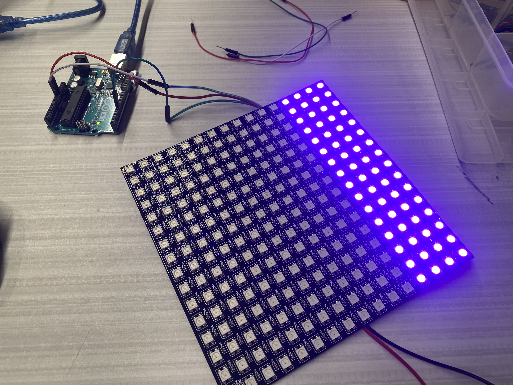

While this page is being worked on, I am going to be recording how the prototyping process has gone thus far.
Prototyping
October 24, 2024
After having recieved the RFP from Fairchild about what they wanted us to create, my group sat down and broke down what we needed to start working on to two main issues: Motor control and LED control. I started working with the stepper motors that we ordered. This day was mainly spent getting one of the steppers to work with the ULN2003 driver board that the motors came with. I found a diagram online to wire the motor to an arduino, then I asked ChatGPT to gove me some base code. After seeing the motor work, the last thing I did was wire a second motor to the arduino to figure out next class how to get the two motors to work in tandem.
October 28, 2024
Today was comprised of a lot of back and forth researching on how to get two servo motors to run in tandem using an arduino UNO R3. I went through several forums and asked ChatGPT for help with writing the code. Through this, I started going between two libraries on arduino IDE: Stepper.h and Accelstepper.h. The main issue I was having getting the two motors to spin at the same time in opposite directions. By the end of the day, I was only able get the motors to spin together in the same direction.
October 30, 2024
We began today by working on the lighting lystem. My team member Jack had been working slightly on this previously, however I joined him because he was having trouble getting started. We had procured two WS2812B LED Panels to use as lights for our small prototype, mimicking the light panels that we will have to use for the actual clinostat. I first went to ChatGPT to research how to program the board. This is where I learned about the Adafruit Neopixel library. After installing this and using the base code that ChatGPT suggested, Jack and I were able to turn the light on. However, of the 256 total LEDs in the 16x16 pixel display, only 64 turned on, and any attempt to change the color of the lights failed. After trouble shooting with the code, the LED panels, and the arduino board, we figured out that because the board was drawing too much power from the laptop that it was connected to to turn the LEDs on, the computer didn't recognize the port correctly and couldn't upload the code to the board. The lapptop also wasn't supplying enough power to turn on all the lights, as shown below.
November 1, 2024
After switching to a more powerful laptop and disconnecting the lights when uploading the code to the board, we were able to successfully turn on the LED panel, and even have it change colors. However, I believe it necessary to look into adding a relay to the circuit to take away the stress of the current from the arduino board and not risk it overheating or frying. After getting one panel to work, all that was necessary to add the other panel was to daisy chain it to the first panel and double to pixel count in the initial code. The next images show the single and double panel circuits.
November 5, 2024
Today I was spent working with Mr. Perez on getting the motors to work properly. I decided to stick with using the Accelstepper.h library, as it gave me more control over the motors. After working for a bit, I was able to have the motors spin in tandem in opposite directions, which would allow the motors to spin the clinostat's body together, as the motors are facing each other in the design. However, I was only able to get the motors to spin back and forth between two set positions, between which the motors would accelerate to a certain speed and then slow down when they approached the set positions. Instead, I needed the motors to start spinning and not stop. I tried to code this in by using the motor.runSpeed() command, but this seemed to crash the code, cuasing the motors to not move at all. By the end of the day, I was only able to have the motors spin between positions, but more importantly I had the motors spinning in opposite directions, which was good progress.
November 12
December 6